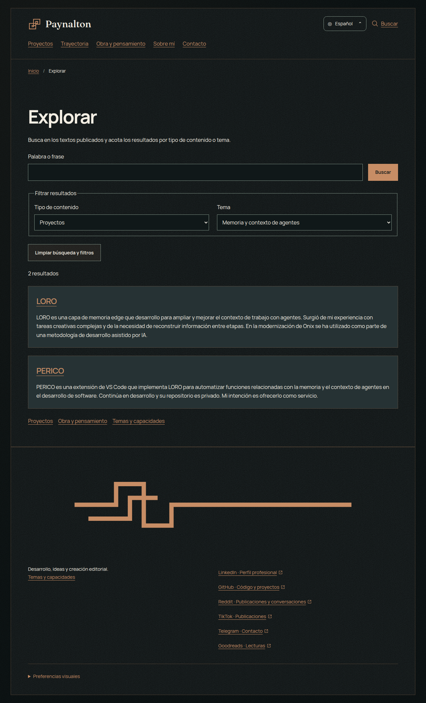
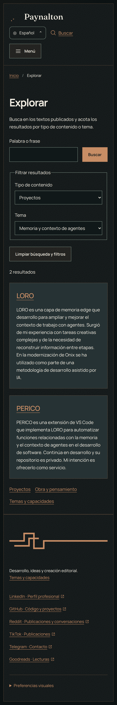


<!doctype html><html lang="es"><meta charset="utf-8"><meta name="viewport" content="width=device-width, initial-scale=1"><title>PT09 — Búsqueda y temas</title><style>body{margin:0;padding:32px;background:#17191b;color:#eee;font:18px/1.6 system-ui}main{max-width:1200px;margin:auto}a{color:#e5b77e}section{margin:40px 0}figure{margin:16px 0}img{display:block;max-width:100%;height:auto;border:1px solid #666}.mobile{max-width:430px}figcaption{margin:8px 0}</style><main><h1>PT09 — Búsqueda, filtros y temas</h1><p>Capturas del sitio local. <a href="README.md">Entrega y validación</a>.</p><section><h2>Búsqueda filtrada: memoria y contexto de agentes</h2><figure class="desktop"><figcaption>Escritorio</figcaption><a href="capturas/desktop/filtros.png"></a></figure><figure class="mobile"><figcaption>Móvil</figcaption><a href="capturas/mobile/filtros.png"></a></figure></section><section><h2>Directorio de los diez temas</h2><figure class="desktop"><figcaption>Escritorio</figcaption><a href="capturas/desktop/temas.png"></a></figure><figure class="mobile"><figcaption>Móvil</figcaption><a href="capturas/mobile/temas.png"></a></figure></section></main></html>
